THE RECIPE COLLECTION
All Recipes
Browse 213 BiteSparks recipes with clear ingredients, timing, and beginner-friendly instructions.
213 recipes
No matching recipes yet. Try another recipe name, ingredient, cuisine, or tag.

Dinner
Creamy Lemon Chicken Pasta
Silky lemon cream sauce, tender chicken, and pasta for an easy weeknight favorite.

Breakfast
Smashed Avocado Toast
Creamy avocado, crisp toast, chili flakes, and a bright squeeze of lemon.

Seafood
Honey Garlic Salmon Bowls
Glazed salmon, fluffy rice, crunchy vegetables, and a simple honey-garlic sauce.

Dessert
Greek Yogurt Berry Parfait
Layers of creamy yogurt, juicy berries, crunchy granola, and honey.

Dessert
Chocolate Cake
A classic American chocolate layer cake with moist cocoa layers and smooth chocolate buttercream frosting.

Soup
Cozy Garden Vegetable Soup
A hearty vegetable soup packed with beans, herbs, and comforting flavor.
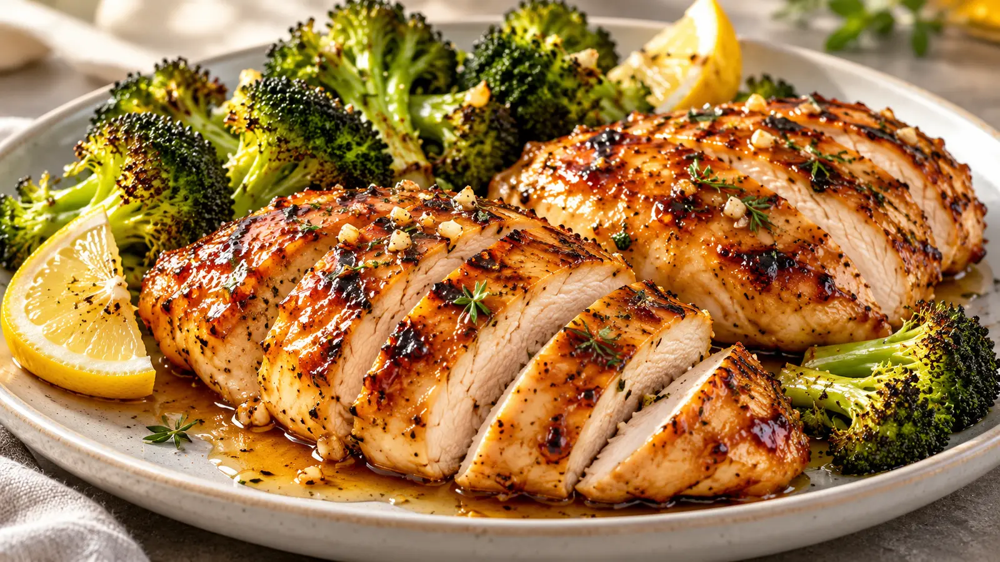
Chicken
Honey Glazed Chicken Breast
Juicy chicken breast coated in a sticky honey-garlic glaze for a fast, family-friendly weeknight dinner.

Dinner
Classic Family Meatloaf
A tender, savory beef meatloaf finished with a sweet and tangy ketchup glaze.

Dinner
Creamy Baked Mac and Cheese
Ultra-creamy macaroni and cheese baked with a golden, buttery breadcrumb topping.

Dinner
Classic Homemade Lasagna
Layered lasagna with rich meat sauce, creamy ricotta, mozzarella, and Parmesan.

Chicken
Crispy Air Fryer Chicken Wings
Extra-crispy chicken wings made in the air fryer and tossed with a buttery buffalo sauce.

Dinner
Golden Baked Pork Chops
Tender baked pork chops with a savory mushroom and onion sauce.

Dinner
Old-Fashioned Beef Stew
Tender beef, potatoes, carrots, celery, and herbs simmered into a rich comforting stew.

Dinner
Easy Ground Beef Tacos
Seasoned ground beef tucked into crisp taco shells with fresh, crunchy toppings.

Dinner
Classic Spaghetti and Meatballs
Tender beef-and-sausage meatballs simmered in homemade marinara and served over spaghetti.

Breakfast
Fluffy Buttermilk Pancakes
Tall, tender buttermilk pancakes with crisp golden edges, butter, and maple syrup.

Breakfast
Classic Banana Banana Bread
Moist, tender banana bread packed with ripe banana flavor and a buttery brown-sugar crumb.

Dessert
Easy Sugar Cookies
Simple buttery sugar cookies with crisp edges and a soft, tender center.

Dinner
Classic Slow Cooker Pot Roast
Fall-apart tender beef pot roast with carrots, potatoes, onion, and a rich savory cooking broth.

Dinner
Classic Chicken Pot Pie
Creamy chicken and vegetables baked under a golden, flaky pie crust for classic American comfort food.

Dessert
Classic Chocolate Chip Cookies
Crisp-edged, chewy-centered chocolate chip cookies with plenty of melted chocolate in every bite.

Chicken
Southern Fried Chicken
Crispy, golden Southern-style fried chicken with juicy seasoned meat and a crunchy coating.

Appetizer
Buffalo Chicken Dip
Creamy, cheesy Buffalo chicken dip with tangy hot sauce, ranch, and tender shredded chicken.

Pasta
Chicken Alfredo
Creamy chicken Alfredo with tender fettuccine, garlic, Parmesan, and golden pan-seared chicken.

Chicken
Chicken Parmesan
Crispy Parmesan-crusted chicken baked with marinara, mozzarella, and fresh herbs.

Dinner
Chicken Enchiladas
Tender shredded chicken rolled in tortillas, covered with red enchilada sauce, and baked with melted cheese.

Chicken
Chicken Fajitas
Sizzling chicken fajitas with colorful peppers, onions, warm tortillas, and fresh lime.

Dinner
Chicken Fried Rice
Fast chicken fried rice made with chilled rice, tender chicken, scrambled eggs, vegetables, and savory soy sauce.

Salad
Chicken Caesar Salad
Crisp romaine, juicy chicken, crunchy croutons, Parmesan, and creamy Caesar dressing in a satisfying classic salad.

Soup
Chicken Noodle Soup
Comforting homemade chicken noodle soup with tender chicken, vegetables, herbs, and egg noodles in a rich broth.

Dinner
Chicken and Rice Casserole
A creamy American-style chicken and rice casserole with tender chicken, vegetables, cheddar, and a golden baked finish.

Dinner
Chicken Bacon Ranch Casserole
A creamy chicken bacon ranch pasta casserole with cheddar, tender chicken, smoky bacon, and a bubbly baked top.

Breakfast
Bubble and Squeak
A skillet of crisp potato-and-cabbage cakes with a soft centre, designed to turn cold cooked vegetables into a satisfying British-style breakfast.

Appetizer
Welsh Rarebit
A hot Welsh Rarebit topping of mature cheddar, mustard, butter, and ale or milk spooned over crisp buttered toast.

Appetizer
Scotch Eggs
Crisp Scotch eggs with soft-centred boiled eggs enclosed in seasoned sausage and a golden crumb coating.

Breakfast
Full English Breakfast
A traditional full English breakfast plate with sausages, bacon, eggs, beans, vegetables, black pudding, fried bread, toast, and tea.

Breakfast
Kedgeree
Fragrant rice folded with gently poached smoked fish, peas, lemon, herbs and egg for a comforting Anglo-Indian breakfast-style meal.

Seafood
Fish and Chips
Golden white-fish fillets in a light cold batter, paired with twice-cooked chips, peas, lemon and tartar sauce.

Chicken
Coronation Chicken
Chilled chicken folded through a mild curry dressing of mayonnaise and crème fraîche, finished with apricots and sultanas.

Dinner
Ploughman's Lunch
A British cold lunch board centred on bread, cheese, and pickled onions, with optional ham and seasonal accompaniments.

Dessert
Bread Pudding
A baked British bread pudding with softened stale bread, raisins, citrus, warming spice and a crisp demerara finish.

Dessert
Sticky Toffee Pudding
A tender date sponge with warm brown-sugar toffee sauce, made for serving while the sauce can soak into the cake.

Dinner
Cornish Pasty
Hand-crimped Cornish pasties with homemade butter-and-lard pastry, beef skirt, potato, swede, and onion.

Pork
Sausage and Mash
Browned pork sausages served with creamy mashed potatoes and a rich onion gravy for a classic British comfort meal.

Pork
Bangers and Mash
Classic bangers and mash with juicy browned sausages, buttery mashed potatoes, and glossy onion gravy.

Pork
Toad in the Hole
Pork sausages baked in a puffed Yorkshire pudding batter and served with savory onion gravy.

Beef
Beef Roast Dinner
A traditional roast beef dinner with homemade Yorkshire puddings and pan gravy; serve with separately prepared roast potatoes and seasonal vegetables.

Chicken
Sunday Roast Chicken
A simple British Sunday roast chicken with pan gravy; serve alongside your preferred roast potatoes and vegetables.

Appetizer
Yorkshire Pudding
Tall, crisp Yorkshire puddings made from eggs, flour, milk, salt, and hot fat for a classic roast dinner side.

Beef
Beef Stew
Slow-cooked Scottish beef stew with potatoes, swede, carrots, red wine, and a rich savory gravy.

Dinner
Irish-style Stew
An Irish family lamb stew with carrots, celery, onion, and a layer of sliced potatoes baked until tender.

Chicken
Chicken Korma
A mild British Indian chicken korma with coconut cream, yogurt, almonds, and warm spices.

Pork
Maple Glazed Ham
A holiday-ready Canadian maple glazed ham made with a precooked bone-in shank ham, aromatic cloves, and a glossy maple-Dijon spice glaze.

Seafood
Salmon Cakes
Crisp salmon cakes with herbs and a tender centre.

Soup
Salmon Chowder
Creamy smoked salmon chowder with bacon, corn and herbs.

Soup
Seafood Chowder
A creamy Nova Scotia-style seafood chowder with fish and shellfish.

Soup
French Canadian Pea Soup
Traditional French Canadian yellow pea soup with ham.

Chicken
Chicken Pot Pie
Creamy chicken and vegetable filling beneath a flaky golden crust.

Pork
Tourtière Meat Pie
French Canadian double-crust meat pie with warm spices.

Beef
Roast Beef
Simple roasted eye of round beef, sliced thinly for a Canadian family dinner.

Beef
Canadian Meatloaf
Juicy ketchup-glazed beef meatloaf for a comforting Canadian dinner.

Dinner
Poutine
Crisp hand-cut fries topped with cheese curds and warm homemade gravy.

Dessert
Nanaimo Bars
Classic no-bake Canadian bars with cocoa crumb base, custard filling and chocolate top.

Dessert
Butter Tarts
Classic Canadian maple butter tarts in crisp pastry shells.

Beef
Montreal Smoked Meat Sandwich
Cured, smoked and steamed Montreal-style brisket for a classic deli sandwich.

Breakfast
Montreal Bagels
Hand-rolled, honey-boiled and seed-coated Montreal-style bagels.

Pork
Peameal Bacon Sandwich
A peameal bacon sandwich with tomato, iceberg, melted cheese and bomba mayonnaise.

Breakfast
Canadian Sausage Breakfast Casserole
Hash browns, sausage, vegetables, cheddar and eggs baked into a hearty breakfast casserole.

Seafood
Maple Glazed Salmon
Allrecipes maple salmon with a sweet maple-soy garlic glaze.

Chicken
Maple Chicken
Maple syrup chicken breasts with soy, lemon, garlic and ginger.

Salad
Caesar Salad
Crisp romaine lettuce tossed with a classic Caesar dressing, homemade garlic-butter sourdough croutons, Parmesan, lemon, and anchovies.
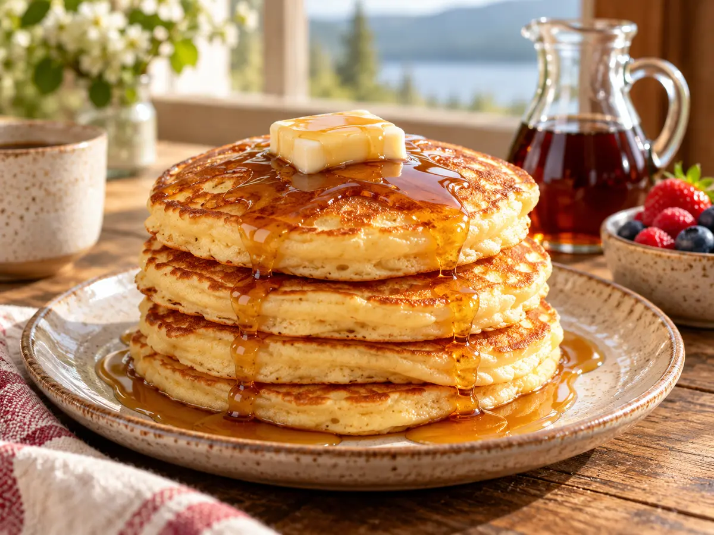
Breakfast
Canadian Pancakes
Tender, golden pancakes served with butter and pure Canadian maple syrup.
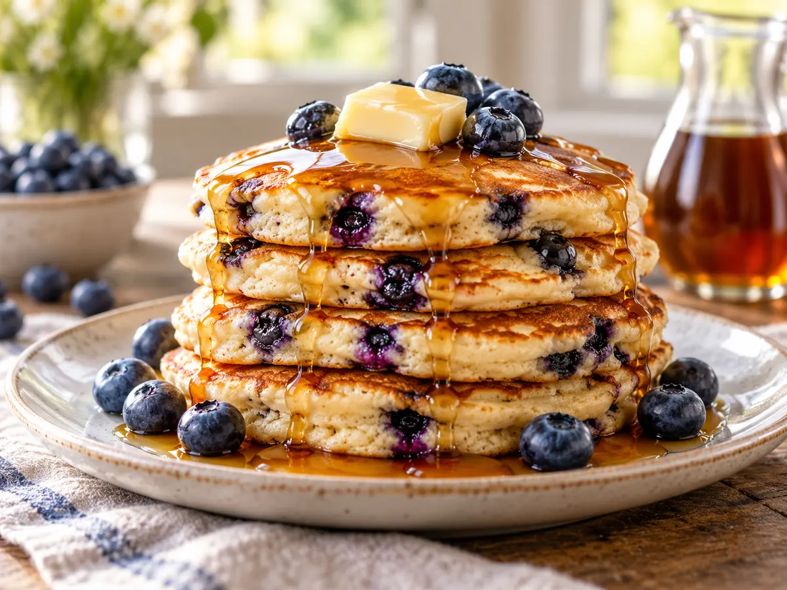
Breakfast
Blueberry Pancakes
Fluffy breakfast pancakes folded with blueberries and finished with maple syrup.
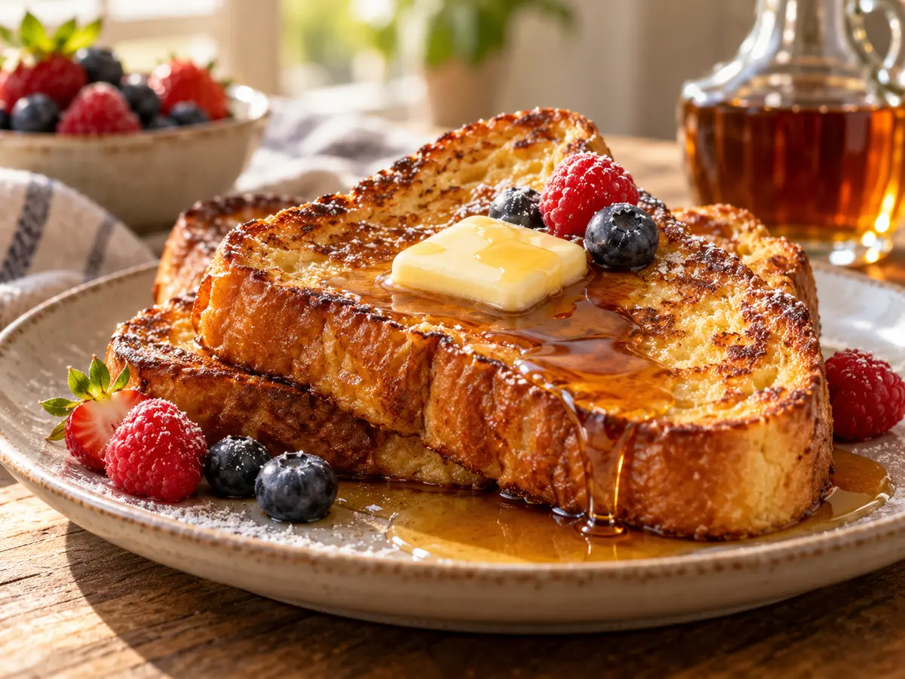
Breakfast
Maple French Toast
Golden brioche French toast with warm maple syrup and butter.

Dessert
Saskatoon Berry Pie
A classic Canadian prairie pie filled with juicy Saskatoon berries and lemon.

Dessert
Date Squares
Buttery oat crumble bars with a soft, bright date filling.

Dessert
Gingerbread Cookies
Spiced, crisp-edged gingerbread cookies for decorating and sharing.

Dessert
Maple Cookies
Soft maple sandwich cookies with a creamy maple filling.

Dessert
Blueberry Grunt
A Nova Scotian stovetop dessert of bubbling blueberries and tender steamed biscuits.

Dessert
Strawberry Rhubarb Crisp
A ruby strawberry-rhubarb filling under a golden buttery oat crumble.
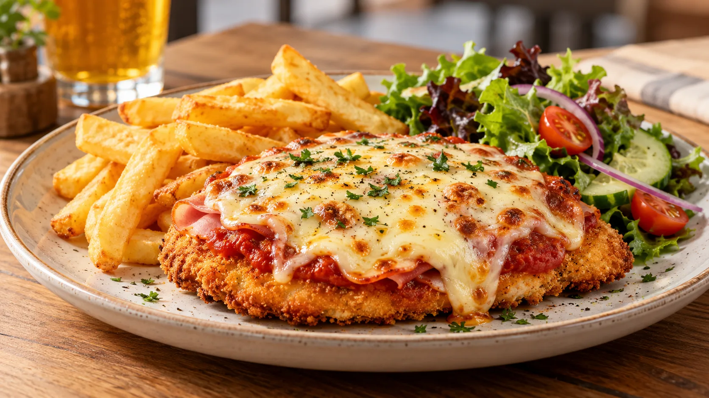
Chicken
Chicken Parmigiana
Australian pub-style chicken parmigiana with crisp crumbed chicken, tomato sauce, ham and bubbling cheese.
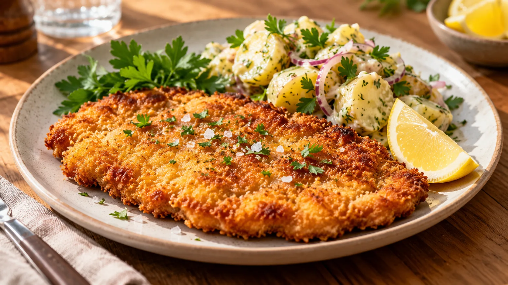
Chicken
Chicken Schnitzel
Crisp golden chicken schnitzel with a lemon wedge and a fresh, easy side.
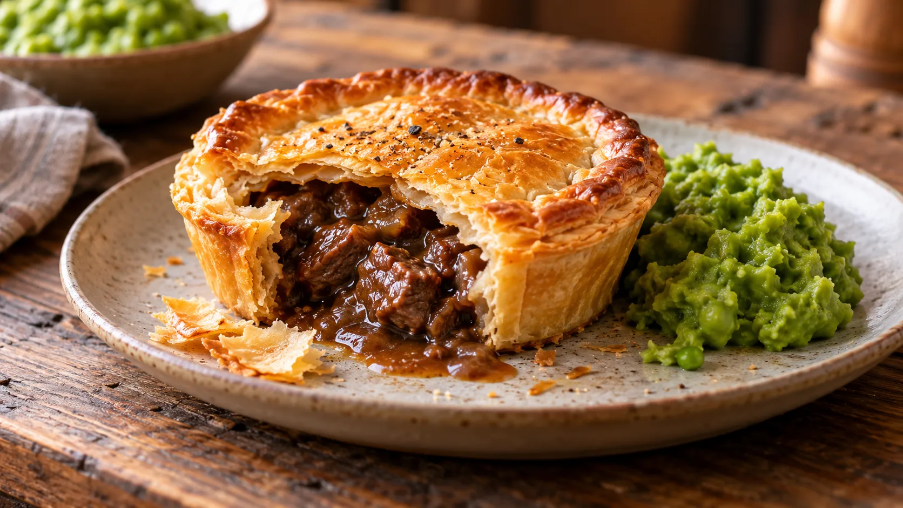
Beef
Beef Pie
Golden puff-pastry beef pie with a rich savoury gravy filling.
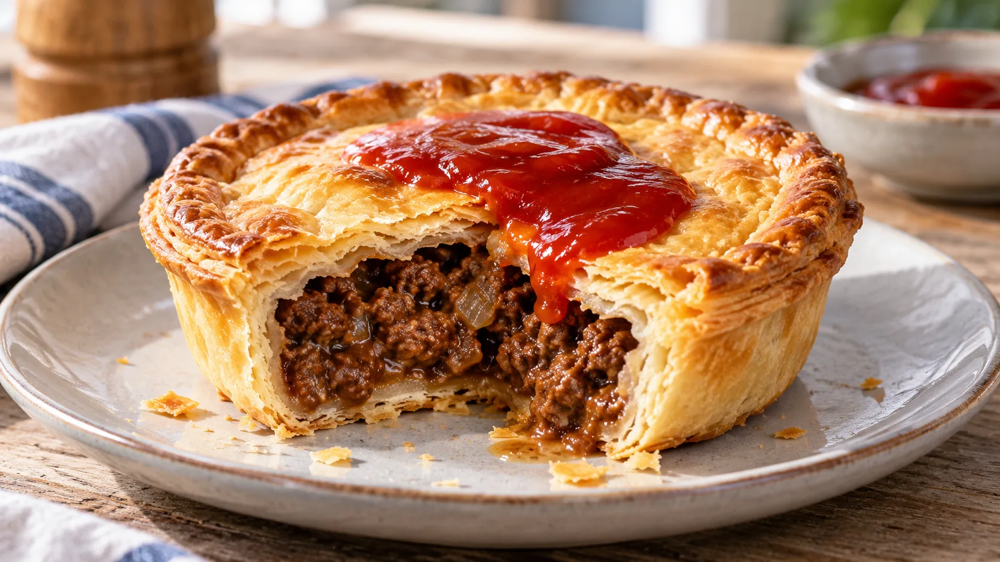
Beef
Meat Pie
Classic Australian-style individual meat pies with a tender minced-beef filling and flaky pastry.
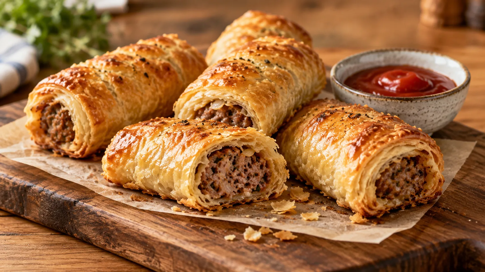
Pork
Sausage Rolls
Flaky Australian sausage rolls with a savoury pork-and-beef filling and crisp pastry.

Dinner
Lamb Shanks
Slow-braised lamb shanks in a rich tomato and red-wine gravy for a comforting Australian-style dinner.
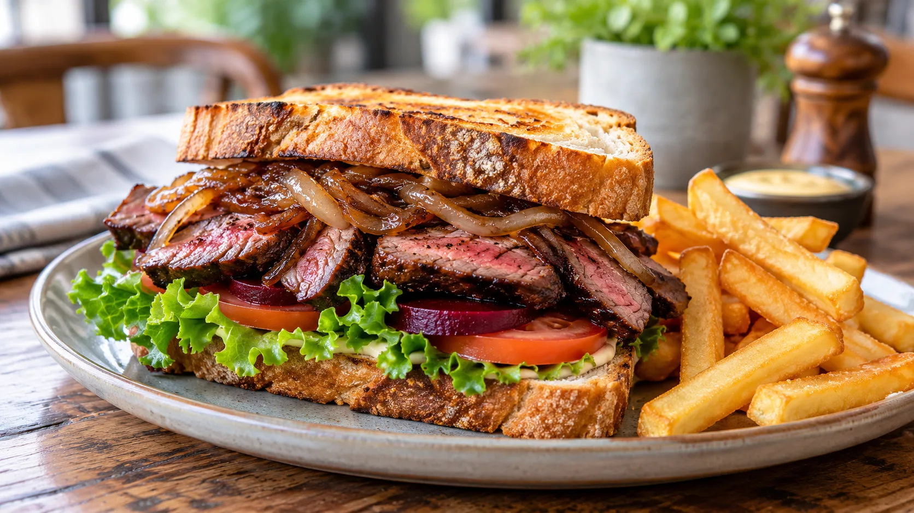
Beef
Steak Sandwich
A hearty Australian-style steak sandwich with grilled beef, onions, salad and beetroot.
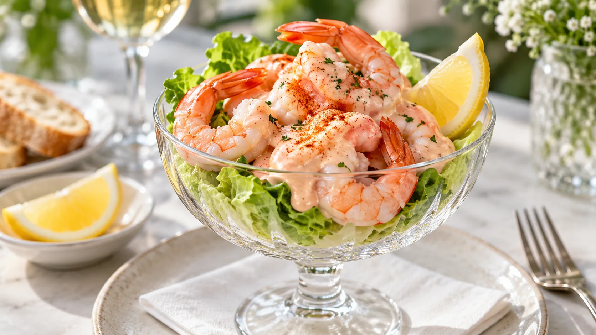
Appetizer
Prawn Cocktail
Classic chilled prawn cocktail with crisp lettuce, lemon and a creamy pink seafood sauce.

Appetizer
Shrimp Cocktail
Classic American shrimp cocktail with chilled poached shrimp and a tangy homemade cocktail sauce.

Dessert
Pavlova
Classic Australian pavlova with a crisp meringue shell, marshmallow centre, cream and fresh fruit.

Dessert
Lamingtons
Soft Australian sponge squares coated in chocolate icing and coconut.

Dessert
Anzac Biscuits
Golden chewy Australian ANZAC biscuits with oats, coconut and a buttery caramel flavour.
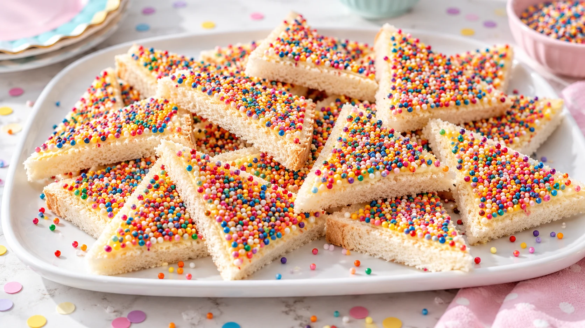
Appetizer
Fairy Bread
A cheerful Australian party snack of buttered white bread covered in colourful sprinkles.

Dessert
Tim Tam Cheesecake
No-bake chocolate Tim Tam cheesecake with a cookie crumb base and creamy filling.

Dessert
Caramel Slice
Australian caramel slice with a shortbread base, baked caramel middle and chocolate top.

Dessert
Neenish Tarts
Classic Australian Neenish tarts with jam, cream filling and signature two-tone icing.

Dessert
Lamington Cake
A celebration-size lamington cake layered with chocolate, coconut, jam and cream.
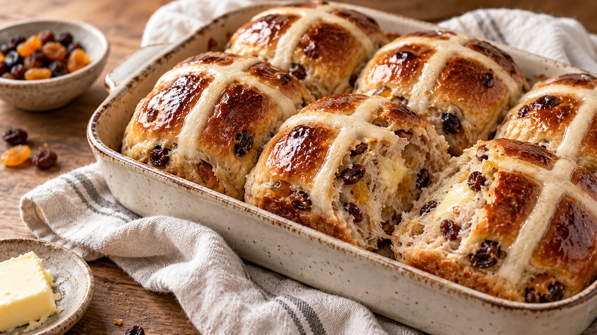
Breakfast
Hot Cross Buns
Soft spiced hot cross buns studded with fruit, finished with flour crosses and glossy glaze.
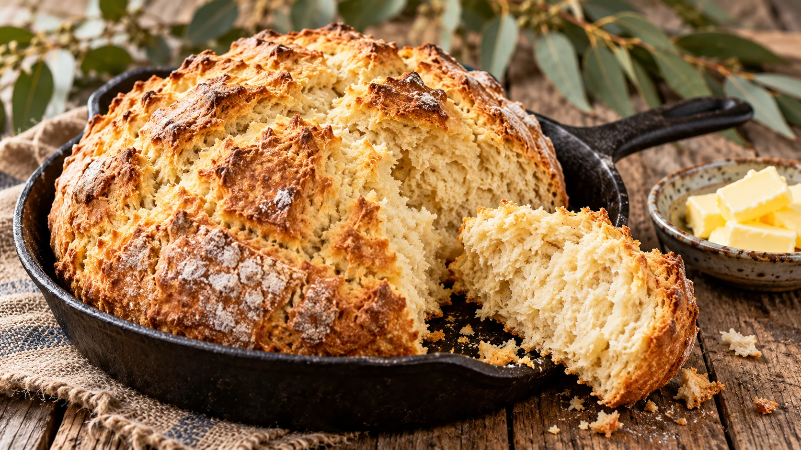
Breakfast
Australian Damper
Simple rustic Australian damper bread with a crisp crust and soft centre.
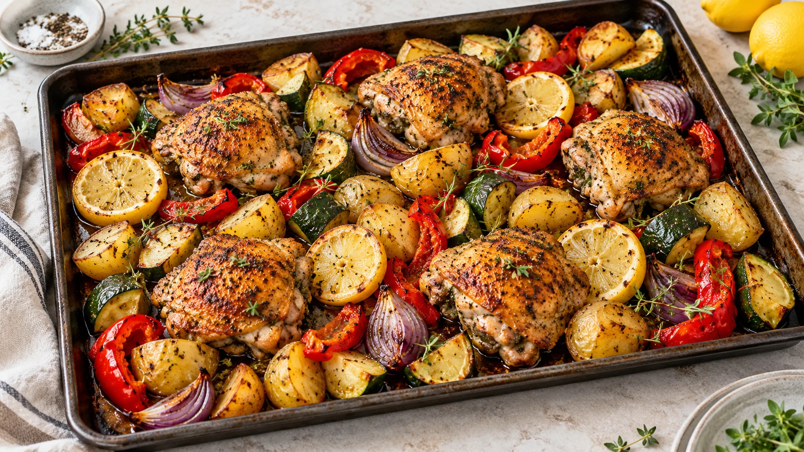
Chicken
Chicken Tray Bake
Moroccan-style Australian chicken tray bake with roasted vegetables, chickpeas and warming spices.
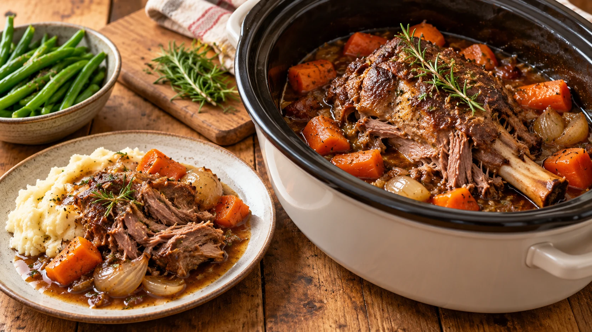
Dinner
Slow Cooker Lamb Chops
Tender slow-cooker lamb chops with potatoes, carrots and simple savoury pan juices.
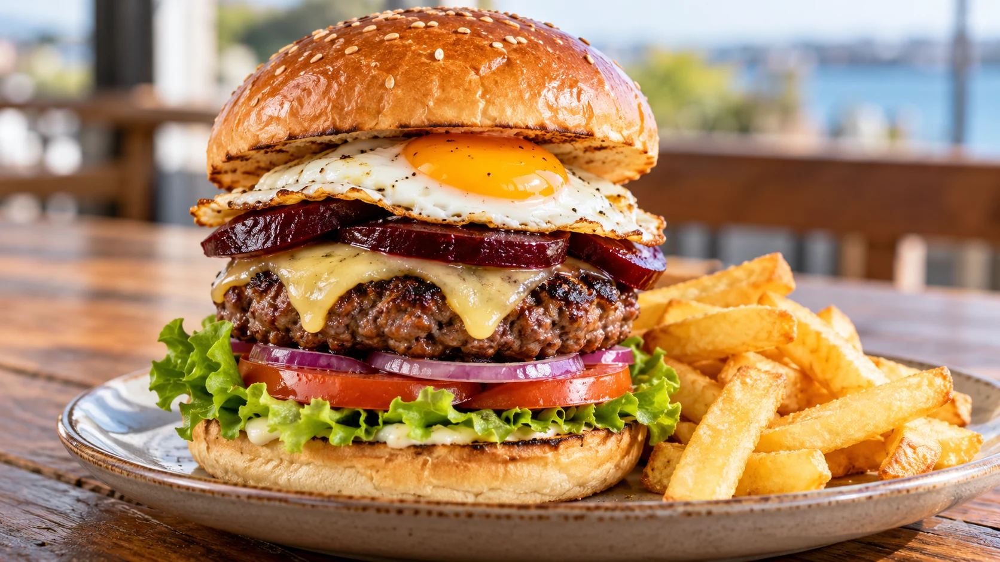
Beef
Australian Beef Burger
Australian burger with the lot: juicy beef, beetroot, egg, pineapple, cheese and fresh salad.